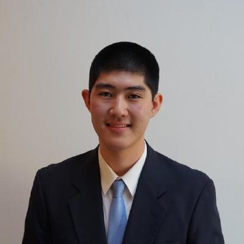

Yoshiki Takashima

Hi!
Current and Past Positions
- Post-Doctoral Associate ~ Yale Law School (May 2024 -)
- Advised by Prof. Scott J. Shapiro.
- PhD in Electrical and Computer Engineering ~ Carnegie
Mellon University: (August 2019 - March 2024)
- Co-Advised by: Prof. Limin Jia and Prof. Corina Pasareanu.
- BS Mathematics - Computer Science ~ UC San Diego (2017 - 2019)
- GPA: 3.95/4.00
- Note: This is a (non-double) math major. A more precise description might be "Applied Mathematics, Application: Computer Science."
- IGETC Transfer Certificate ~ Santa Monica College (2015 - 2017)
- GPA: 3.85/4.00
Publications
- Scheherazade: Evaluating Chain-of-Thought Math Reasoning in LLMs with Chain-of-Problems. Stephen Miner, Yoshiki Takashima, Simeng Han, Sam Kouteili, Ferhat Erata, Ruzica Piskac, Scott J. Shapiro. https://arxiv.org/abs/2410.00151
- VERT: Verified Equivalent Rust Transpilation with Large Language Models as Few-Shot Learners. Aidan Z. H. Yang+, Yoshiki Takashima+ (Equal Contribution), Brandon Paulsen, Josiah Dodds, Daniel Kroening. https://arxiv.org/abs/2404.18852v2
- Crabtree: Rust API Test Synthesis Guided by Coverage and Type. Yoshiki Takashima, Chanhee Cho, Ruben Martins, Limin Jia, Corina Pasareanu. Object Oriented Programming Language (OOPSLA'2024) https://doi.org/10.1145/3689733
- Testing and Verifying Rust's Next Mile. Yoshiki Takashima. Ph.D. Thesis. March 2024. https://doi.org/10.1184/R1/25451383.v1
- Automatically Enforcing Rust Trait Properties. Twain Byrnes, Yoshiki Takashima, Limin Jia. International Conference on Verification, Model Checking, and Abstract Interpretation (VMCAI 2024). https://doi.org/10.1007/978-3-031-50521-8_10
- PropProof: Free Model-Checking Harnesses from PBT. Yoshiki Takashima. ACM Joint European Software Engineering Conference and Symposium on the Foundations of Software Engineering (ESEC/FSE 2023) https://doi.org/10.1145/3611643.3613863
- Mariposa: Measuring SMT Instability in Automated Program Verification. Yi Zhou, Jay Bosamiya, Yoshiki Takashima, Jessica Li, Marijn Heule, Bryan Parno. Formal Methods in Computer-Aided Design (FMCAD 2023). See tech report.
- SyRust: Automatic Testing of Rust Libraries with Semantic-Aware Program Synthesis. Yoshiki Takashima, Ruben Martins, Limin Jia, and Corina S. Păsăreanu. In Proceedings of the 42nd ACM SIGPLAN International Conference on Programming Language Design and Implementation (PLDI’21). https://doi.org/10.1145/3453483.3454084
- VeriSketch: Synthesizing Secure Hardware Designs with Timing-Sensitive Information Flow Properties. Armaiti Ardeshiricham, Yoshiki Takashima (presenter), Sicun Gao, Ryan Kastner. In Proceedings of the 2019 ACM SIGSAC Conference on Computer and Communications Security (CCS’19). https://doi.org/10.1145/3319535.3354246
Fellowships and Funding
- Prabhu and Poonam Goel Graduate Fellowship: 2021 - 2022
- Amazon Research Award Enabling One-Line Rust Verification with Program Synthesis: 2023 - 2024.
Teaching and Service
- Student Volunteer for ICSE 2022
- Student Volunteer Chairs: Michael Hinton and Laura Moreno
- Teaching Assistant for "Software Security" (18732)
- Professor: Bryan Parno, Spring Semester 2021
- This graduate-level ECE course teaches students strategies for developing secure software, ranging from static analysis to formal verification using Dafny.
- Maintained infrastructure, conducted office hours and recitations.
- Artifact Evaluation for VMCAI 2021
Credits and License
This webpage was based off of Jesse Kelly's Imagine Template, licensed under GPL v3.
- Original Files from: https://github.com/jessekelly881/Imagine
- My Source Code: https://github.com/YoshikiTakashima/public-documents/website/